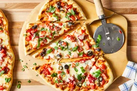

Pizza on the grill

Yes, it`s realy good!
Grill is usually reserved for meats, vegetables or fungi, but it`s also feasable to coock delicious pizza`s
Ingredients
Pizza dough
- 1 cup warm water
- 1 (.25ounde) package active dry yeast
- 3 cups all-pourpuse flour
- 1 tablespoon olive oil
- 2 teaspoons kosher salt
- 2 cloves garlic, minced
- 1 tablespoon chopped fresh basil
Garlic oil
- half cup olive oil
- 1 teaspoon minced garlic
Pizza toppings
- Quarter cup tomato sauce, divided
- 1 cup chopped tomatoes, divided
- Quarter cup roasted red peppers, drained and chopped, divided
- 2 cups shredded mozzarella cheese, divided
- 4 tablespoons chopped fresh basil, divided
- Step 1 Gather all ingredients
- Step 2 Make dough: Pour warm water into a large bowl; dissolve yeast and sugar in warm water. Let stand until yeast softens and begins to form a creamy foam, about 5 to 10 minutes.
- Step 3 Mix in flour, 1 tablespoon olive oil, and salt until dough pulls away from the sides of the bowl.
- Step 4 Turn onto a lightly floured surface. Knead until smooth, about 8 minutes.
- Step 5 Place dough in a well-oiled bowl and cover with a damp cloth.
- Step 6 Set aside to rise until doubled, about 1 hour. Punch down; knead in garlic and basil. Set aside to rise for 1 more hour, or until doubled again.
- Step 7 Meanwhile, make garlic oil: Combine 1/2 cup olive oil with minced garlic in a microwave-safe cup or bowl. Heat for 30 seconds in the microwave.
- Step 8 Preheat an outdoor grill for high heat; brush the grate with garlic oil.
- Step 9 Make pizzas: Punch down dough and divide in half. Form each half into an oblong shape 3/8 to 1/2 inch thick.
- Step 10 Carefully place one piece of dough on the hot grill. Dough will begin to puff almost immediately. When the bottom crust has lightly browned, turn dough over using two spatulas.
- Step 11 Working quickly, brush garlic oil over crust.
- Step 12 Top with 1/2 of each of the following: tomato sauce, chopped tomatoes, olives, red peppers, cheese, and basil.
- Step 13 Close the lid and cook until cheese melts. Remove from grill and set aside to cool for a few minutes. Repeat with second piece of dough.